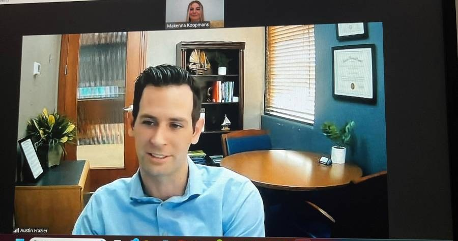
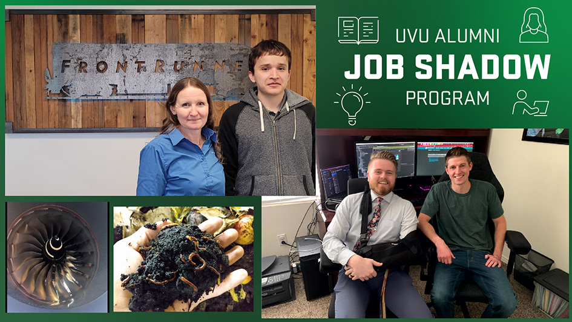
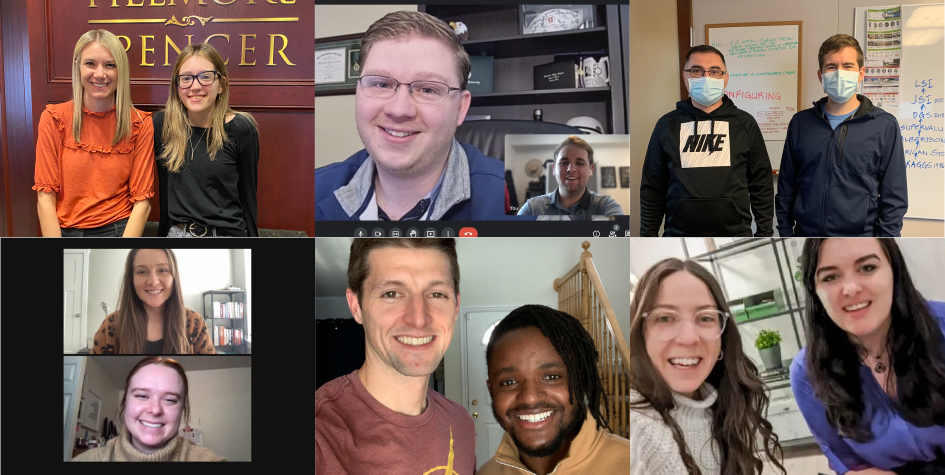

The Utah Valley University Alumni Job Shadow Program is an opportunity for students to spend part of their day (in person or virtually) with UVU alumni working in careers they are interested in pursuing after graduation.
This is an opportunity for you to host students at your organization for a day (in person or virtually) to provide industry and career insights. Giving your time by volunteering can make a real and positive impact on a student!
This is your chance to get real-world experience, explore a field of interest, and build your network in a professional environment with a UVU alum!
Applications are now closed. Still want to connect with fellow alumni or help students navigate their career journey? Stay tuned to uvu.edu/alumni and our social media to learn about other ways to stay involved with UVU.

The 2024 Job Shadow Program matched over 100 participants, facilitating numerous valuable connections. Students and alumni from diverse industries from animation to finance reflect the program’s broad reach. While many pairs met in person, others connected virtually, maximizing accessibility. A heartfelt thank you to all who participated in making this program a success!
“My match was perfect, and I learned a great deal, not only about my specific field but about the criminal justice field in general. My favorite takeaway was learning about the disposition of evidence and the policies surrounding it.”
“This was my best hosting experience yet. The student was very eager and curious about my position, industry and work. They came prepared with great questions for me that I could tell they are really seeking information and guidance/mentorship in my industry.”
“Even though I came into this not really prepared with what I wanted, Jared was very helpful in giving me both insight and feedback from the questions that I asked. And, it was nice to know that there really are other people besides friends and family who want me to succeed.”
“I really enjoyed the student that I was matched with! I appreciated that she was studying the field I work in (last year, none of the students I was matched with were studying my field — just somewhat related fields). We actually ended up hiring this student as one of our interns because the job shadow was such a good experience! I am grateful I got to meet her in that setting.”

In its second year, the Utah Valley University (UVU) Alumni Job Shadow Program continued to exemplify engaged learning by providing alumni and students the opportunity to connect for career exploration. The program allowed many UVU students to receive industry and career insights from UVU alumni working in their fields of interest.
Throughout the month of January, alumni met with students in person or virtually. All were invited to participate, including alumni who live outside of Utah. In fact, alumni across 10 states and 23 industries were represented! A couple of students were even offered a job or internship after participating.
“The student was very professional and presentable. It was wonderful connecting with a new Wolverine, and I’m grateful to give back to the next generation!”
“The alum was very open and welcoming. Her willingness to share the details of the day-to-day activities of her career really helped me clarify whether fieldwork is something I want to go into. I really appreciate her sharing her time, experience, and knowledge.”
“It was an honor and a pleasure to contribute to the education of science students by showing them practical scientific applications of composting at a university level. If I can ever be shadowed by any other students, I would be happy to do so.”
“This experience was amazing, and he spent the time really helping me understand what I wanted to do in the future and how to make that possible with my future career.”
“I thought it went well! This is my second year doing it and I love it.”
“I got to experience what a day in the life of a software developer is like and I really enjoyed it. It made me excited to enter the field.”

Our first Job Shadow Program was a success! With over 200 participants, we matched many students and alumni together to create a meaningful and hands-on experience. Alumni from 28 industries offered their time and experience to over 100 students. Because the program was offered in person as well as virtually, we had alumni participants from 11 states and 2 countries: the US and Jordan. One student was also offered an internship, and alumni let our team know about three more opportunities. Thank you to everyone who participated, and we hope to see you again next year!
“I had such a great experience. My alum was awesome to work with and really catered the experience to me and what I’m interested in, and introduced me to a lot of people who were also really kind to answer questions I had.”
“I thought the experience was great! The student is a talented kid, willing to listen and learn. I feel like I was able to give him great information on the banking / lending / finance industry the has real world applicability. I look forward to staying in touch with the student. I also look forward to other job shadow opportunities with UVU students. I think it could also be a mutually beneficial relationship for future employment opportunities. Thanks for the experience.”
“I had a wonderful experience shadowing my alum. I got to witness a session with a client, and then she showed me what the behind-the-scenes of a clinical therapist’s job looks like. She was able to help answer my questions about grad school, licensing, and private practice, as well as give me insight into what the life of a therapist is like. I have only positive things to say about the program.”
“Was a great experience. She asked great questions and we both felt like it was productive and a good meeting to have. She asked about what she could do to prepare for the workforce and we talked about what the workload was like. I learned more about what UVU is doing to prepare students for the career I’m in and what to look for when interviewing these students who are working for work.”